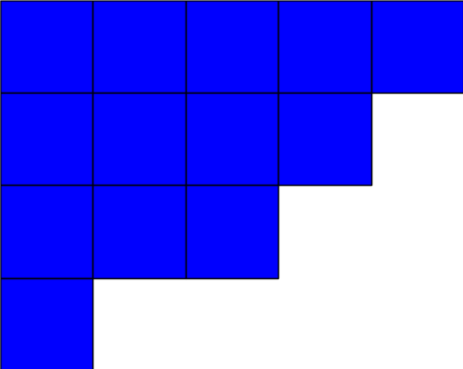

Back to Navigation
Background, Motivation, and References
Background:
Integer Partitions:
A finite\(^1\) integer partition is a sequence $$\lambda = (\lambda_1, \lambda_2, ..., \lambda_r)$$ of non-negative integers listed in weakly decreasing order $$\lambda_1 \geq \lambda_2 \geq ... \geq \lambda_r$$
By convention, we do not distinguish between two such sequences differing only by a string of zeros at the end. Hence, we regard \((3,2,1,0), (3,2,1,0,0),\) and \((3,2,1,0,...,0)\) as the same partition.
Any non-zero \(\lambda_i\) in a partition are called the parts of lambda. The number of parts is the length of \(\lambda\), denoted by \(l(\lambda)\). The sum of the parts is the weight of \(\lambda\), denoted by \(|\lambda|\).
$$|\lambda|=\sum_{i=1}^{r}\lambda_i=\lambda_1 + \lambda_2 + ... + \lambda_r$$
If \(|\lambda|=n\), we say that \(\lambda\) is a partition of \(n\). The set of all partitions of \(n\) is denoted by \(P_n\).\(^2\)
It is often convenient to describe a partition using a notation that indicates the number of times each integer occurs as a part (its multiplicity). We refer to this as the partition's multiplicity vector, given by
$$\lambda=(\lambda_1^{m_1}, \lambda_2^{m_2}, ..., \lambda_r^{m_r})$$
where \(m_i\) is the number of parts that are equal to \(\lambda_i\). If an \(m_i\) value is omitted, we assume that it is equal to 1.
\(^1\)Partitions can also be an infinite sequence, but we only consider finite partitions for the computations performed on this website.
\(^2\)This set is generated using a recursive approach for some of the interactive examples seen on the website.
Young Diagrams and Conjugate Partitions:
Given a partition \(\lambda\), one can produce its Young diagram. This diagram is formally defined as the set of points \((i,j) \in \mathbb{Z}^2\) such that \(1 \leq j \leq \lambda_i\). Some sources prefer to use squares instead of points to represent the Young diagram, which is the convention we have adopted for this website.
As a clarifying example, given the (multiplicity vector notation) partition \(\lambda=(4,3^{2},2,1)\), its Young diagram is:
The conjugate of a partition \(\lambda\), denoted \(\lambda'\) is the partition whose Young diagram is the transpose of the Young diagram for \(\lambda\). In other words, it is the diagram obtained by a reflection across the main diagonal.
The conjugate of \(\lambda=(4,3^{2},2,1)\) is \(\lambda'=(5,4,3,1)\).

Maya Diagrams:
A Maya diagram is a visual representation of a semi-infinite monomial. A study of semi-infinite monomials is given here from Nathan Grieve. A brief introduction regarding Maya diagrams is given here. For additional reading, information regarding Solitons and Infinite Dimensional Lie Algebras is given here.
Motivation:
The purpose of this website is to provide an interactive interface for users to perform the various computations and view the statistics that arise when studying integer partitions and Maya diagrams. Rather than providing only static examples as many other sources have already done, we emphasize the importance of interactivity, allowing the user to enter custom data. Behind the scenes, Python code is responsible for running all the computations supported.
In the future, additional computations and statistical output could be added to increase the functionality of this website.
This website was created during a Dean's Summer Research Internship (DSRI) at Carleton University, under the supervision of Dr. Colin Ingalls and Dr. Nathan Grieve. (Click here for the website created for the curves and surfaces portion of this project.)
References:
- Mathematical Components:
- Code Components: